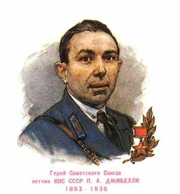

Hall of Fame della Casa del Popolo
In questa pagina sono ricordate tutte le personalità che hanno servito la Casa del Popolo e la comunità di sinistra di Caravaggio, o che hanno dato lustro alla sinistra caravaggina in Italia e nel mondo.
Persone di merito
Primo Gibelli (1893-1936)

Originario di Masano ed eroe dell'URSS dopo aver combattuto nella guerra di Spagna
Luigi Marchi)

Capogruppo in Consiglio Comunale per il PCI e Consigliere Regionale per il PCI
Federico Mezzanotte (1932-2024)

Sindaco di Caravaggio per il PSI dal 1983 al 1988
Giuseppe "Crapabela" Pisoni (1935-2021)

Segretario del PCI - sezione di Caravaggio
Mario Pontoglio

Storico dirigente e segretario del PCI - sezione di Caravaggio
Achille Stuani (1897-1976)

Primo segretario eletto del PCd'I - Federazione di Bergamo, organizzatore della Resistenza al Nazifascismo in Bassa bergamasca, Sindaco di Caravaggio dal 1946 al 1951, eletto Deputato alla Camera della Repubblica dal 1948 al 1953 nel gruppo del PCI.
Domenico Trufelli (1936-2026)

Storico militante della Casa del Popolo con la tessera dal 1949 al 2026